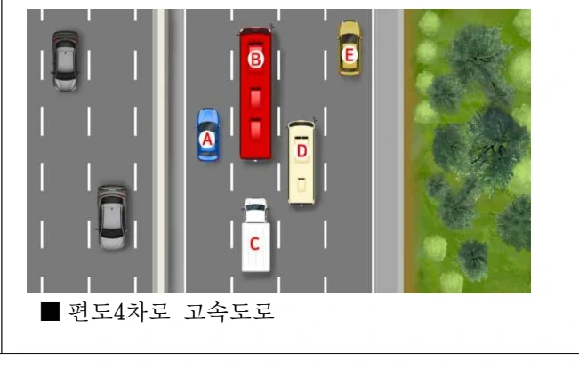

835. Хурдны замаар явж буй дараах тээврийн хэрэгслээс зориулалтын эгнээний журам зөрчсөн 2 тээврийн хэрэгсэл аль нь вэ?

- ①A (Гүйцэж түрүүлж буй суудлын автомашин)
- ②B (36 хүний суудалтай том оврын олон суудалт автомашин)
- ③C (1 тонн ачааны автомашин)
- ④D (26 хүний суудалтай том оврын олон суудалт автомашин)
- ⑤E (Явж буй суудлын автомашин)
Хариулт харах
Зөв хариулт
② B (36 хүний суудалтай том оврын олон суудалт автомашин)
③ C (1 тонн ачааны автомашин)
Үндэслэл
Хэрэгжүүлэх журмын 9 дүгээр хавсралт: нэг чигтээ 2 эгнээтэй хурдны замд 1 дүгээр эгнээг гүйцэж түрүүлэх бүх машин, 2 дугаар эгнээг бүх машин ашиглаж болно. Нэг чигтээ 3 ба түүнээс олон эгнээтэй бол 1 дүгээр эгнээг гүйцэж түрүүлэх суудлын машин болон маш жижиг, жижиг, дунд оврын хүн тээврийн машин ашиглана. Зүүн эгнээг мөн эдгээр машин, баруун эгнээг том оврын хүн тээврийн машин, ачааны машин, тусгай машин, хуулийн 2 дугаар зүйлийн 18-б-д заасан барилгын машин механизм ашиглана. Зүүн эгнээ гэдэг нь 1 дүгээр эгнээг хасаад үлдсэн эгнээг хоёр хуваахад 1 дүгээр эгнээнд ойр талын эгнээ юм; үлдсэн тоо сондгой бол дунд эгнээг зүүнд оруулахгүй. Баруун эгнээ нь 1 дүгээр болон зүүн эгнээнээс бусад эгнээ.
Үндэслэлийн текст нь машин орчуулга.